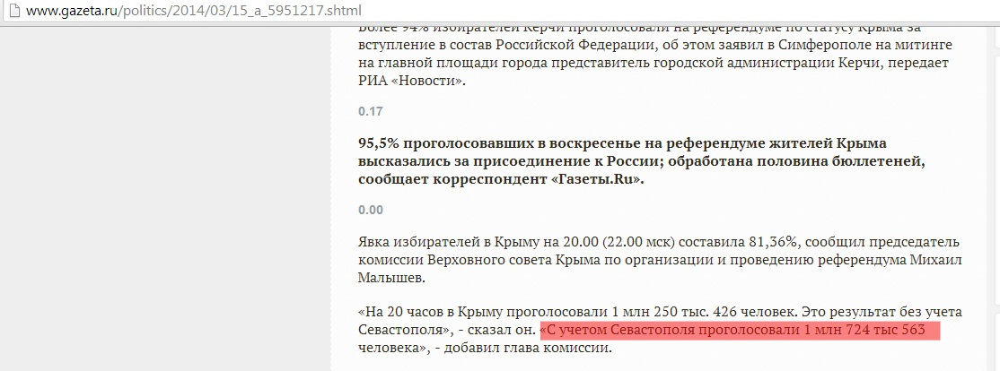
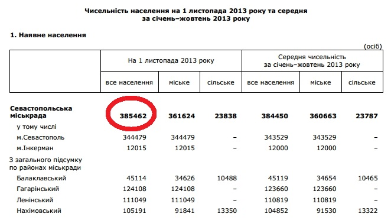
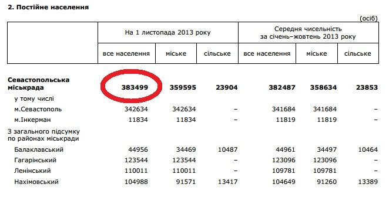

Обновлено: Российские СМИ исказили количество проголосовавших жителей Севастополя
Ряд российских СМИ со ссылкой на председателя комиссии Верховного совета Крыма по организации и проведению референдума Михаила Малышева заявили о том, что в общей сложности в крымском референдуме приняли участие более 1,7 млн человек.
В частности, gazeta.ru вложила в уста Малышева следующую цитату:
«На 20 часов в Крыму проголосовали 1 млн 250 тыс.426 человек.Это результат без учета Севастополя.С учетом Севастополя проголосовали 1 млн 724 тыс.563 человека».Малышев добавил, что явка составила 81,36%.
Исходя из этих цифр, наблюдательный блогер teh-nomad подсчитал, что 1 724 563-1 250 426= 474 137 — такое количество человек из Севастополя якобы проголосовали в референдуме.При этом на сайте статистики Севастополя указана такая информация:
На 1 ноября прошлого года население Севастополя составило 385 462 человека.Это с учетом детей, которые не имели права голосовать.
474 137 — 385 462 = 88 675 человек случайно появились в Севастополе во время референдума.
88675/385 462*100=123,6% (или 124% после округления) севастопольцев, исходя из распространенных российскими СМИ цифр, якобы проголосовали за вход Крыма в состав России.
Однако на самом деле gazeta.ru и другие СМИ ошиблись — Малышев не говорил о 1,7 млн проголосовавших — он назвал цифру 1 млн 524 563 человека вместе с Севастополем.Момент объявления цифр видно на этом видео: https://www.youtube.com/watch?v=hBf7-b3IyIA=youtu.be=3m55s
Таким образом, информация о фальсификации крымскими властями результатов референдума, как минимум в этом случае, не подтверждается.
Posted On: 2014-03-16T21:00:00



Content Date: 2014-03-16
Download Date: 2021-07-16
Document ID: L0C04F9K5